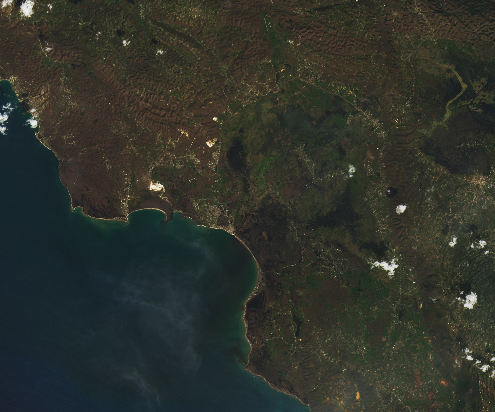

A Direct Hit on Jamaican Forests
Although major hurricanes regularly graze Jamaica, only a handful have hit the island directly since modern meteorological record-keeping began in the 1850s. However, the most recent to do so was a monster.
Hurricane Melissa slammed into southwestern Jamaica on October 28, 2025, bringing sustained winds of 185 miles (295 kilometers) per hour, rainfall of 18 to 24 inches (45 to 60 centimeters), and a storm surge of more than 9 feet (3 meters) in some areas. Melissa was the strongest storm on record to make landfall in Jamaica, far exceeding Hurricane Gilbert in 1988. It tied Hurricane Dorian in 2019 and the 1935 Labor Day Hurricane for being the strongest landfalling storm in the Atlantic. Scientists even detected a wind gust of 252 miles per hour—the strongest ever measured in a tropical cyclone.
Melissa also appears to be the costliest storm Jamaica has ever faced. World Bank estimates suggest Melissa caused nearly $9 billion (1.4 trillion Jamaican dollars) in damage as it carved a broad path of destruction across the island. The storm severely damaged or destroyed 116,000 structures, displaced as many as 25,000 people, affected tens of thousands of farms, and caused widespread power outages.
NASA satellite images reveal extensive change across the landscape. The pair of images above shows parts of Saint Elizabeth parish in southwestern Jamaica before (left) and after (right) Melissa made landfall. The OLI (Operational Land Imager) on Landsat 8 and OLI-2 on Landsat 9 captured the images on September 8, 2025, and November 3, 2025.
The parish, considered Jamaica’s breadbasket, took especially heavy damage. The World Bank estimated $135 million of damage to the parish’s farms. Jamaica’s agriculture ministry tallied total damages of $188 million throughout the country, including more than 40,000 hectares of farmland damaged and 1.25 million animals lost.
Vulnerable ecosystems were also hit hard. “The damage to mangrove forests in the Black River area looks severe and widespread,” said Lola Fatoyinbo, a visiting scholar at the MIT Media Lab and a former NASA scientist, as she assessed Landsat imagery of the storm’s aftermath.
How fully mangroves recover in the Black River Lower Morass, a Ramsar-protected wetland site, will depend both on their health prior to the storm and on the distribution of mangrove species. When black mangroves are broken, they can resprout and regrow easily. “If a red mangrove gets knocked over, that tree will likely die as it doesn’t have the ability to resprout,” she said.
Also scattered across the Black River Lower Morass and hit hard by Melissa were fragments of freshwater swamp forests. This rare type of seasonally inundated forest was damaged by a previous hurricane and could be pushed out entirely by invasive species if it was badly damaged by Melissa, explained Kurt McLaren, a forest ecologist at Northumbria University in England.
The storm also affected moist broadleaf forests in Jamaica’s inland, mountainous areas. Much of the browning in the Landsat images reflects where trees in broadleaf forests lost their leaves, but the change in color does not necessarily mean that the trees died, explained McLaren.
Where trees are still alive, he explained, recovery time can be quick: a new flush of leaves can grow within six months. In areas where damage was more severe—those with windthrow, windsnap, or landslides—recovery can take years or even decades. “Ground surveys or high-resolution observations will be needed to reveal the true extent of the damage,” McLaren said.
In some cases, greening that occurs after hurricane damage can still signal a changed, ailing forest. “Invasives or other plant forms that like disturbed conditions can take over,” McLaren said. This can lead to the creation of novel ecosystems with few native tree species—a process currently underway in the Black River Lower Morass.
McLaren’s past research in Jamaica’s Blue Mountains and John Crow Mountains showed that the amount of exposure forests have to hurricanes can have clear, long-lasting impact. Forests with moderate exposure to hurricanes ended up having the highest levels of biodiversity, while those with the highest exposure became the most densely packed with trees. In some cases, the effects remained visible more than 100 years after a storm.
Meanwhile, McLaren said high-intensity hurricanes are hitting Jamaica’s forests more often, and human activities such as forest clearing and thinning, along with climate-related factors including higher temperatures and more frequent droughts, are straining ecosystems. “Together, all of this is reducing the resilience of Jamaica’s forests,” he said.
The NASA Disasters Response Coordination System activated to support organizations responding to the storm, including the Jamaican government and the U.S. State Department. The team posted several maps and data products about the event on its open-access mapping portal.